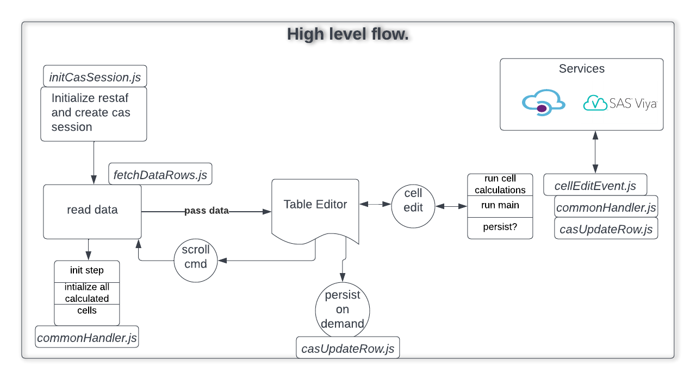

restafedit - library for browsing and editing data tables
Usage Notes
appEnv
This object houses all the information needed access Viya, edit handlers, etc... It also has a place for application writers to save application specific information.
The schema is below with sample values. While the library only supports cas server at this point, the plan is to add support for compute service.
appEnv is passed to all user defined handlers and functions in this library. Makes for a more flexible programming.
Do not change any of the values in this object. Use appControl object to store/read your information.
{
store : <this is the control object for restaf library>,
session : <cas session object>,
restaflib : <object to access functions in restaflib>,
logonPayload: <information to connect to Viya -see below>,
appControl : appControl /* see below */
id : <A unique id for this invocation>
}
logonPayload
The logonPayload is designed to handle many situations. See this link for all the options https://github.com/sassoftware/restaf/wiki/authentication
However for the use cases this library is designed for the following two are probably sufficient
Authenticated browser
If the browser is authenticated(authorization_code flow) then the following is recommend
{ host: <url for your Viya server>}
If you use the authentication token, then use the following:
{
host: <url for your Viya server>,
token: <your authentication token>
}
AppControl
This is passed to setup by the user to start the app session.
The schema is below with sample values. While the library only supports cas server at this point, the plan is to add support for compute service.
{
dataControl: {
source: 'cas',
table : {caslib: 'casuser', name: 'testdata'},
access: {},
byvars: ['id'],
where : {},
cachePolicy: true,
initialFetch: {
count : 1,
from : 1,
format: false
},
customColumns: {
total: {
Column : "Total",
Label : "Grand Total",
FormattedLength: 12,
Type : "double"
}
},
customRows: []
},
editControl: {
handlers : {},
save : true,
autoSave : true
},
appData: {}
}
Notes on appControl
Only the not-so obvious keys are explained below.
-
initialFetch: the first set of records to read from: The record number where the read starts(table.fetch action) count: Number of records to read
-
cachePolicy: If true the data is stored in appEnv.state. You should set this to false if you want to manage the data. The pagination information will always be saved in appEnv to enable easy scrolling.
-
handlers: This is an object with functions for init, main, term and indiviual columns. Set to {} if you do not plan to make use of this feature.
-
byvars: An array of by variables. At this time, one has to use key fields to update a record in CAS. ex: ['firstname', 'lastname']
-
appData - this is where the app writer can save information and retrieve it from appEnv. appEnv is passed to all handlers. So it is available in functions like init, main etc. The example above shows what I use in my generic DataEditor component.
Sample appData
In the quick start React component(viyaedit) that uses this library, the appData is used to hold some UI related information as shown below. So it can be anything you want.
Content of appData is entirely upto the developer. Sample from the demo application.
appData: {
layout : {},
component: 'DataFormMulti',
getViewer: null,
handlerSet: 'testData',
form: {
defaultComponent: "InputEntry",
show : ['id', 'total', 'x2', 'x1', 'x3'],
classes : {},
title : 'Editing data using forms',
visuals : {
x2: {
component: "Slider",
props : {
min : 0,
max : 50,
steps: 1,
},
},
total: {
props: {
disabled: true,
},
}
}
}
}
rowObject
The rows in the table(be it cas tables or SAS tables) are reduced to this form
{x1: 20, x2: 'abc',....}.
The keys are lower-cased column names.
If you added computed columns they will also be in this object. This allows the custom handlers like init, main and term to access these.
When updating the data on the server, the custom columns are dropped.
eSchema
The schema returned from the server is reduced to this form: {x1: {detail4-x1}, x2: {details4-x2},...}
An extra key 'custom" is added to each of the details. This is set to "true" if the column is a custom column.
This additional key is useful
- Save operations can drop these columns
- Can be used by UI to apply a different style to custom columns
byVars
At the current time, we have to use key columns to identify the row to be updated. So byVars is an array of the key fields.
ex: ['X1', 'X2']
rowIndex
When editing in a table form, it might be useful to know which row the current data array is being processed in the handlers. So this is purely informational
fetch Results
The results from the fetch of records has the following schema
{
columns: <this is the ecolumns>
data : <this is an array of rowObjects>
pagination: < obhect with information for scrolling to prev or next>
}
Overview
Desired features in the work product 2
Table versus Form for data entry
Currently Supported Features of the library 2
Background
Going back in history, SAS had products like SAS/FSP and SAS/AF that allowed users to create simple or complex interactive applications. As SAS moved to the Viya platform these products were dropped. SAS provided REST API (application programming interfaces) as an industry standard way for creating applications.
The key component of these applications is entering data. Common destinations of the modified data ARE:
- The client application
- Custom code on a Viya
- Compute server
- CAS (Cloud Analytic Server) server
- MAS (Micro Analytic Score)
- Other SAS services that can be accessed via REST API
- Some external servers
- Azure App running a SAS Decision using SAS Container Runtime (SCR)
- Others...
Desired features in the work product
The goal of this project is to create a small reusable library and components for data entry in SAS Viya.
This collection should have the following characteristics:
-
Must be useable out of the box by users (internal and external)
-
Must address the basic capabilities of SAS/FSP and SAS/AF since these represent the requirements of SAS users over an extended period.
-
The core functionality must be unaware of the UI (User Interface) environment it is running in. The assumption is that the UI capability will be supplied by SAS and/or users.
Table versus Form for data entry
There are significant differences in how the user interacts with an application which uses a Table versus a custom form.
However, at the lowest level both require the same functionality - Accessing data, verifying the entered data, saving the modified records, executing additional processing on the server.
One of the key goals of this project is to create a single code base to handle both scenarios. [TBD: Detailed document on the library functions and usage notes].
Currently Supported Features of the library
-
Creation and management of CAS session
-
Reading one or more records from a cas table
-
Update the records based on a key
-
Scrolling through the table
-
Allow users to specify calculations on modifying a value. The current options are:
- On the client using JavaScript
- On the cas server using casl or any cas action
- On an external server via http
- An Azure App for a SAS Decisioning Flow
Basic Flow
The Table Editor in the picture below is supplied by the user. 
Future
-
Support where clause for reading records
-
Editing with standard SAS tables
-
Examples of using non-SAS databases like SingleStore(?)